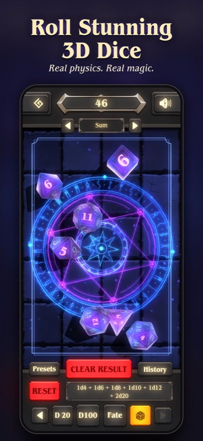

Fantasy Dice Roller
A 3D dice roller for tabletop role-playing games and board games, for iPhone and Android. Made by one person, without ads.
Contact
Questions, bugs or ideas: acidsheepgames@gmail.com
I answer every mail myself, usually within a few days. For a bug, it helps to mention your phone model and what you did right before it happened.
Common questions
How do I roll?
Tap a dice button at the bottom (D4, D6, D20 …) to put dice on the board, then touch the board and let go. You can also switch on Shake to Roll in Game Control.
I bought Pro, but it is locked again
This can happen after reinstalling the app or on a new phone. On iPhone, open Game Control and tap Restore Purchases. On Android, make sure you are signed in to Google Play with the account you bought it with, then restart the app.
Can I get a refund?
Purchases are handled by Apple and Google, so refunds are too: on iPhone at reportaproblem.apple.com, on Android in the Google Play app under your order history.
Why does the app ask for access to my photos?
Only when you choose to put one of your own pictures on a custom dice. The picture stays on your phone. You can say no and still use everything else.
What happens to my custom dice and presets if I delete the app?
They are stored on your phone only, so they are removed together with the app.
What are the tips for?
They are a voluntary thank-you and unlock nothing. The app is a passion project, and tips help me keep working on it.